Thus far, we have considered linear regression given some key assumptions. Namely, for models of the form \[
y = \beta_0 + \beta_1x_1 + \ldots + \beta_px_p + \varepsilon
\] we assume that the noise or errors \(\varepsilon\) have zero mean, constant finite variance, and are uncorrelated. Furthermore, in order to perform hypothesis tests–F test, t test, partial F-tests–and to construct confidence and prediction intervals as we did in the previous chapter, we further assumes that \(\varepsilon\) has a normal distribution.
In this chapter, we will consider deviations from these assumptions, which will lead to questions such as
What happens if the variance of \(\varepsilon\) is not constant?
What happens if \(\varepsilon\) has heavier tails than those of a normal distribution?
What effect can outliers have on our model?
How can we transform our data to correct for some of these deviations?
What happens if the true model is not linear?
2.2 Plotting Residuals
In the last chapter, we constructed the residuals as follows. Assume we have a sample of \(n\) observations \((Y_i,X_i)\) where \(Y_i\in\mathbb{R}\) and \(X_i\in\mathbb{R}^p\) with \(p\) being the number of regressors and \(p<n\). The model, as before, is \[
Y = X\beta + \varepsilon
\] where \(Y\in\mathbb{R}^n\), \(X\in\mathbb{R}^{n\times (p+1)}\), \(\beta\in\mathbb{R}^{p+1}\), and \(\varepsilon\in\mathbb{R}^n\). The least squares estimator is \(\hat{\beta} = ({X}^\mathrm{T}X)^{-1}{X}^\mathrm{T}Y\) and the vector of residuals is thus \[
r = (I-P)Y = (I-X({X}^\mathrm{T}X)^{-1}{X}^\mathrm{T})Y.
\]
We can use the residuals to look for problems in our data with respect to deviations from the assumptions. But first, they should be normalized in some way. As we know from the previous chapter, the covariance of the residuals is \((I-P)\sigma^2\) and that \(SS_\text{res}/(n-p-1)\) is an unbiased estimator for the unknown variance \(\sigma^2\). This implies that while the errors \(\varepsilon_i\) are assumed to be uncorrelated, the residuals are, in fact, correlated. Explicitly, \[
\mathrm{Var}\left(r_i\right) = (1 - P_{i,i})\sigma^2,
\text{ and }
\mathrm{cov}\left(r_i,r_j\right) = -P_{i,j}\sigma^2
\text{ for } i\ne j
\] where \(P_{i,j}\) is the \((i,j)\)th entry of the matrix \(P\).
Hence, a standard normalization technique is to write \[
s_i = \frac{r_i}{\sqrt{(1-P_{i,i})SS_\text{res}/(n-p-1)}},
\] which are denoted as the studentized residuals. For a linear model fit in R by the function lm(), we can extract the residuals with resid() and extract the studentized residuals with rstudent().
2.2.1 Plotting Residuals
2.2.1.1 Studentized Residuals
A plot of studentized residuals from a simple linear regression is displayed below. Generally, abnormally large studentized residuals indicate that an observation may be an outlier.
::: {#rem-residuals} There are other types of residuals that can be computed such as standardized residuals, PRESS residuals, and externally studentized residuals. These are also used to look for outliers. :::
set.seed(128)# Simulate some linear regression dataxx =runif(n=50,min=0,max=5)yy =3*xx +rnorm(n=50,0,2)# Add in one outlierxx <-c(xx, 3)yy <-c(yy,-2)# Fit a linear regressionmd =lm(yy~xx)summary(md)
Call:
lm(formula = yy ~ xx)
Residuals:
Min 1Q Median 3Q Max
-11.0377 -1.2028 0.3087 1.4941 3.8238
Coefficients:
Estimate Std. Error t value Pr(>|t|)
(Intercept) -0.3412 0.7148 -0.477 0.635
xx 3.1263 0.2400 13.028 <2e-16 ***
---
Signif. codes: 0 '***' 0.001 '**' 0.01 '*' 0.05 '.' 0.1 ' ' 1
Residual standard error: 2.549 on 49 degrees of freedom
Multiple R-squared: 0.776, Adjusted R-squared: 0.7714
F-statistic: 169.7 on 1 and 49 DF, p-value: < 2.2e-16
# Plot the dataplot(xx[1:50],yy[1:50],las=1,ylim=c(-3,16),xlab="X",ylab="Y");points(xx[51],yy[51],pch=17,col='blue')abline(md,col='red')
The residuals and the fitted values as necessarily uncorrelated. That is, \(\mathrm{cov}\left(r,\hat{Y}\right)=0\). However, if \(\varepsilon\) is not normally distributed, then they may not be independent. Plotting the fitted values against the residuals can give useful diagnostic information about your data.
The code below gives four examples of plots of the residuals against the fitted values. The first plot in the top left came from a simple linear regression model where all of the standard assumptions are met. The second plot in the top right came from a simple linear regression but with errors \(\varepsilon_i \sim\mathcal{N}\left(0,\sigma^2_i\right)\) where \(\sigma_i^2\) was increasing in \(i\). Hence, the plot has an expanding look to it. The third plot in the bottom left came from a simple linear regression with the addition of a quadratic term. Fitting a model without the quadratic term still yielded significant test statistics, but failed to account for the nonlinear interaction between \(x\) and \(y\). The final plot in the bottom right came from a simple linear regression where the errors were correlated. Specifically, \(\mathrm{cov}\left(\varepsilon_i,\varepsilon_j\right) = \min\{x_i,x_j\}\).
Fun fact: This is actually the covariance of Brownian motion.
# remove the outlier from the last code blockxx <- xx[1:50]set.seed(256)# Create a "good" linear regressionyy.lin =3*xx +2+rnorm(50,0,1);md.lin =lm(yy.lin ~ xx)plot(md.lin,which=1,las=1)
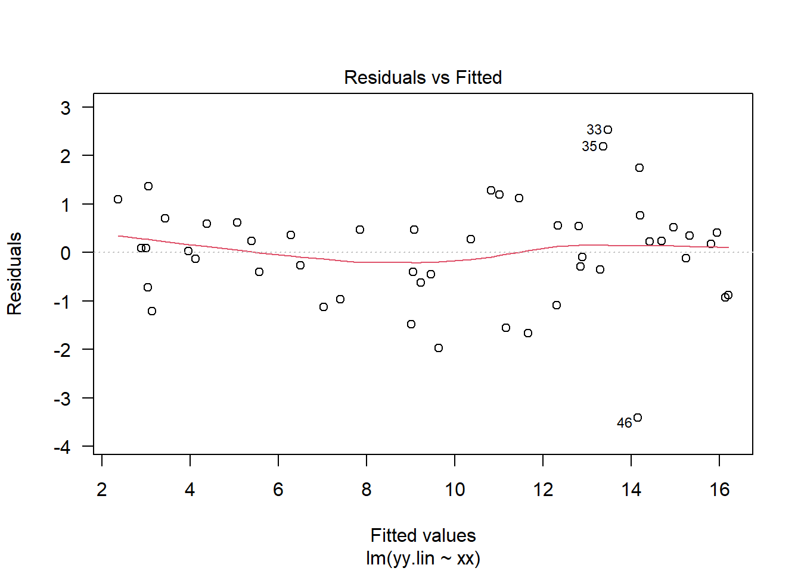
# Create a linear regression with increasing varianceyy.het =3*xx +2+rnorm(50,0,xx);md.het =lm(yy.het ~ xx)plot(md.het,which=1,las=1)
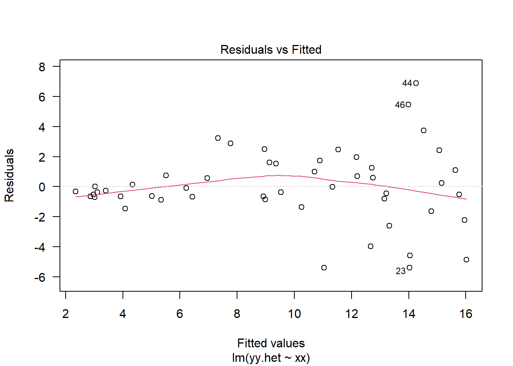
# Create a linear regression with quadratic trendyy.quad = xx^2+3*xx +2+rnorm(50,0,1);md.quad =lm(yy.quad ~ xx)plot(md.quad,which=1,las=1)
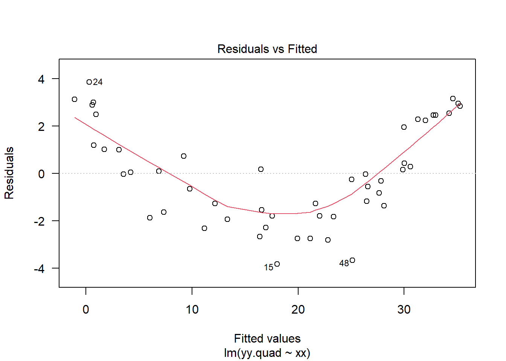
# Create a linear regression with correlated errorserr =rnorm(50,0,1);err <-cumsum(err);yy.cor =3*xx +2+ err;md.cor =lm(yy.cor ~ xx)plot(md.cor,which=1,las=1)
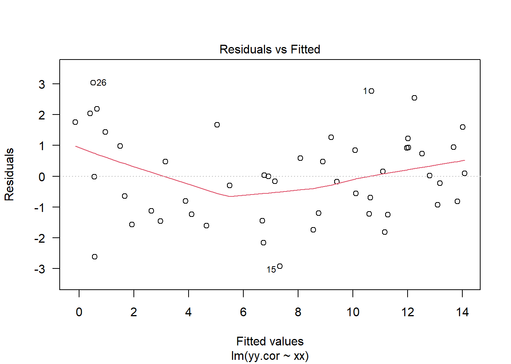
plot( err,type='l',las=1,main="correlated errors, see Time Series Analysis")
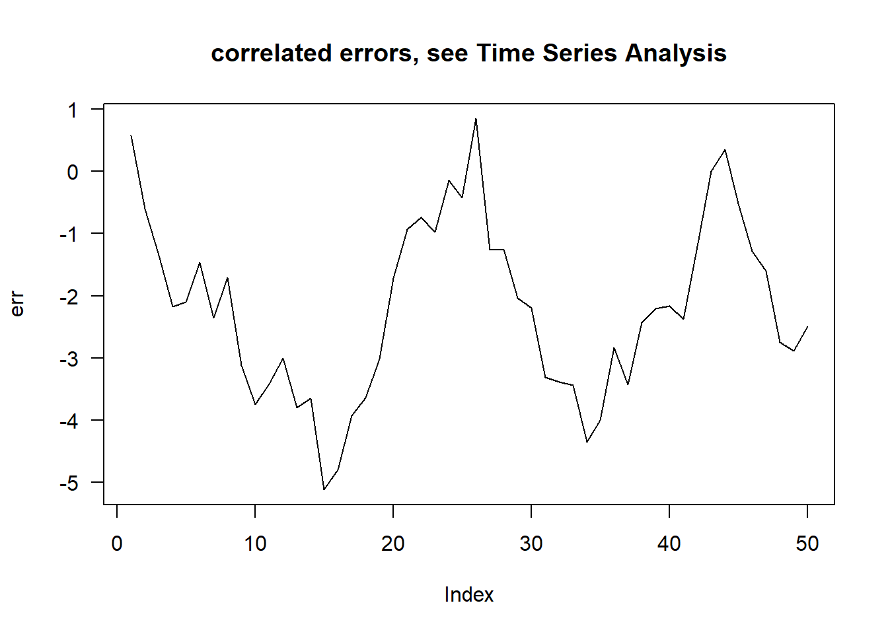
2.2.1.3 Normal Q-Q plots
Another type of plot that can offer insight into your data is the so-called Normal Q-Q plot. This tool plots the studentized residuals against the quantiles of a standard normal distribution.
Definition 2.1 The quantile function is the inverse of the cumulative distribution function. That is, in the case of the normal distribution, let \(Z\sim\mathcal{N}\left(0,1\right)\). Then the CDF is \(\Phi(z) = \mathrm{P}\left( Z< z \right) \in(0,1)\) for \(z\in\mathbb{R}\). The quantile function is \(\Phi^{-1}(t)\in[-\infty,\infty]\) for \(t\in[0,1]\). For more details, see QQ Plot
For a normal Q-Q plot, let \(s_1,\ldots,s_n\) be the ordered studentized residuals, so that \(s_1\le\ldots\le s_n\). The theoretical quantiles are denoted \(q_1,\ldots,q_n\) where \(q_i = \Phi^{-1}( i/(n+1) )\). In R, a slightly different formula is used. The figures below compare various normal Q-Q plots. In the first, the errors are normally distributed and the ordered residuals roughly follow the red line. In the second, the heteroskedastic errors cause the black points to deviate from the red line. This is also seen in the third plot, which fits a linear model to quadratic data. The fourth plot considers correlated errors and the QQ-plot has black points very close to the red line.
Remark 2.1. As noted in Montgomery, Peck, & Vining, these are not always easy to interpret and often fail to capture non-normality in the model. However, they seem to be very popular nonetheless.
# plot the above residuals in QQ-plots # against the normal distributionqqnorm(rstudent(md.lin))abline(0,1,col='red')
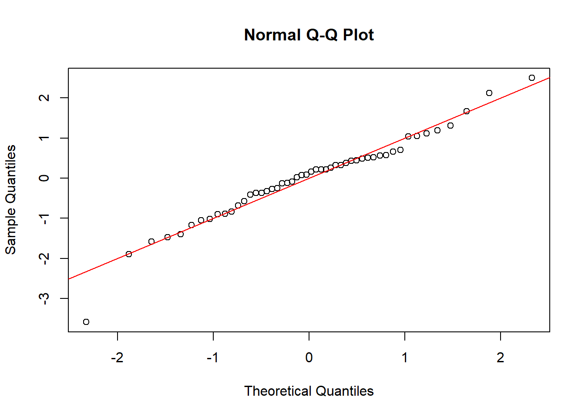
qqnorm(rstudent(md.het))abline(0,1,col='red')
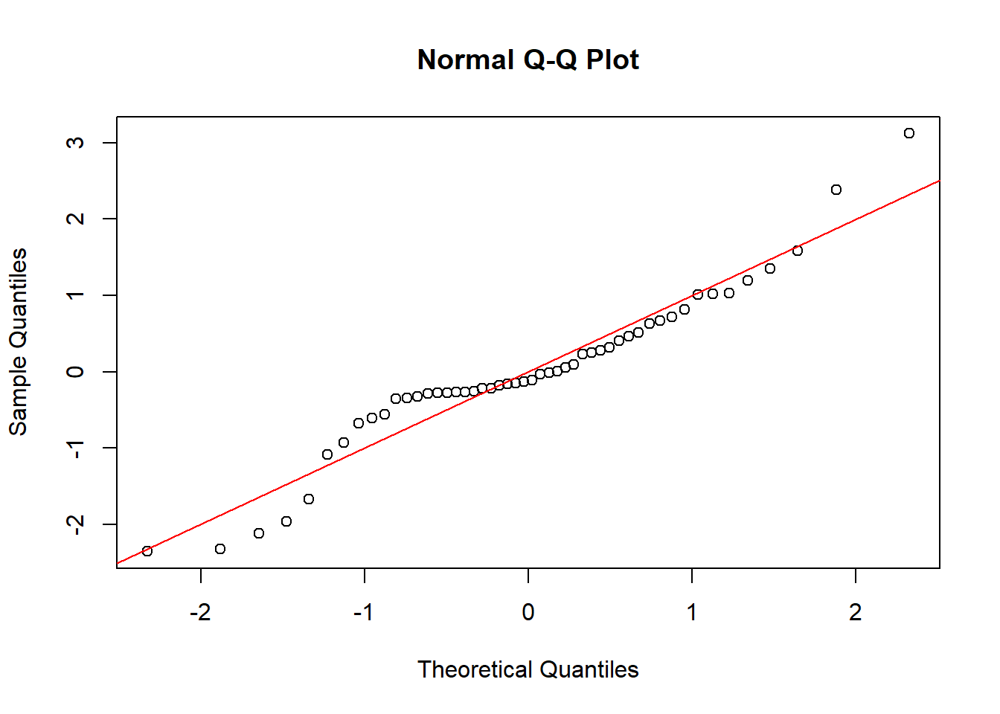
qqnorm(rstudent(md.quad))abline(0,1,col='red')
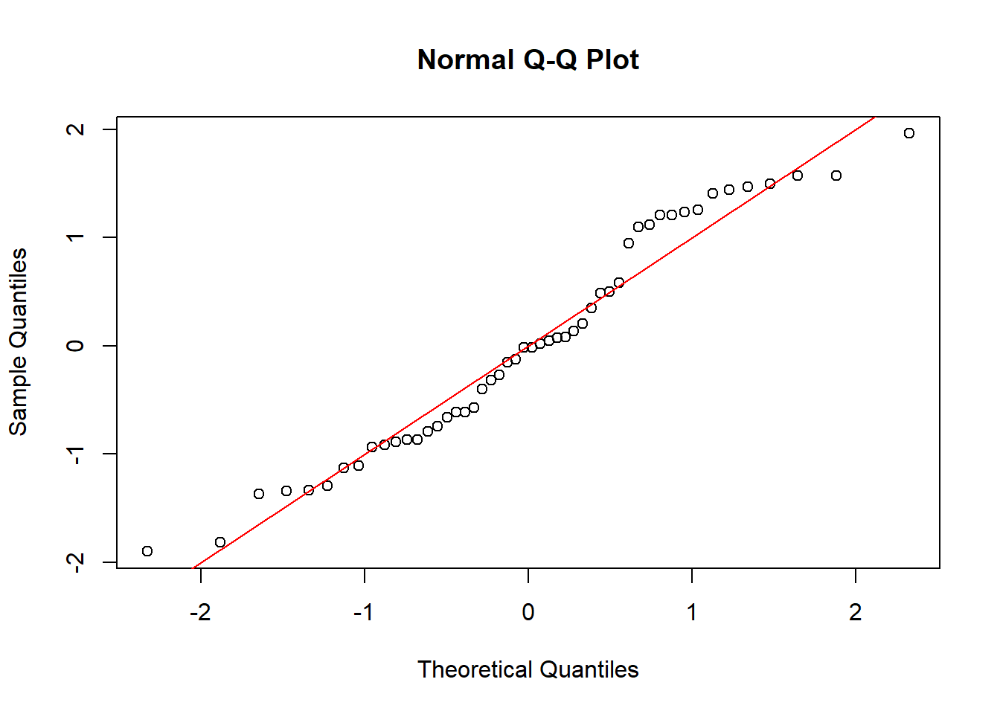
qqnorm(rstudent(md.cor))abline(0,1,col='red')
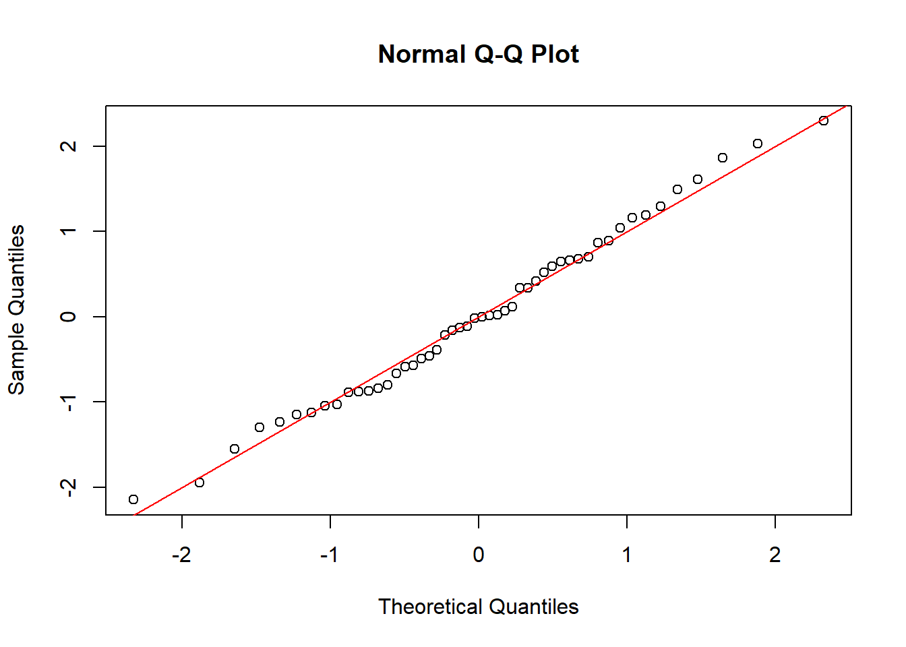
2.2.2 Beer Data Example
The following section considers a dataset that tracks a person’s blood alcohol content after consuming some number of beers. Two covariates in this dataset are the subjects sex and weight. I got this dataset in 2018 from a statistician I met at ICOTS 2018, because, yes, statisticians trade datasets at conferences.
bac =read.csv("data/BACfull.csv")bac
BAC weight sex beers
1 0.100 132 female 5
2 0.030 128 female 2
3 0.190 110 female 9
4 0.120 192 male 8
5 0.040 172 male 3
6 0.095 250 female 7
7 0.070 125 female 3
8 0.060 175 male 5
9 0.020 175 female 3
10 0.050 275 male 5
11 0.070 130 female 4
12 0.100 168 male 6
13 0.085 128 female 5
14 0.090 246 male 7
15 0.010 164 male 1
16 0.050 175 male 4
We can fit a simple regression model that only considers the number of beers consumed as the sole predictor for blood alcohol content. The resulting model estimates that each beer raises a subjects blood alcohol content by 0.018.
In the residual vs fitted plot, the subject with the largest residual (person 3) was also the subject with the lowest weight and most beers consumed. Of course, the following simple regression model does not consider weight as a predictor variable.
Call:
lm(formula = BAC ~ beers, data = bac)
Residuals:
Min 1Q Median 3Q Max
-0.027118 -0.017350 0.001773 0.008623 0.041027
Coefficients:
Estimate Std. Error t value Pr(>|t|)
(Intercept) -0.012701 0.012638 -1.005 0.332
beers 0.017964 0.002402 7.480 2.97e-06 ***
---
Signif. codes: 0 '***' 0.001 '**' 0.01 '*' 0.05 '.' 0.1 ' ' 1
Residual standard error: 0.02044 on 14 degrees of freedom
Multiple R-squared: 0.7998, Adjusted R-squared: 0.7855
F-statistic: 55.94 on 1 and 14 DF, p-value: 2.969e-06
plot(md.bac1,which=1,las=1)
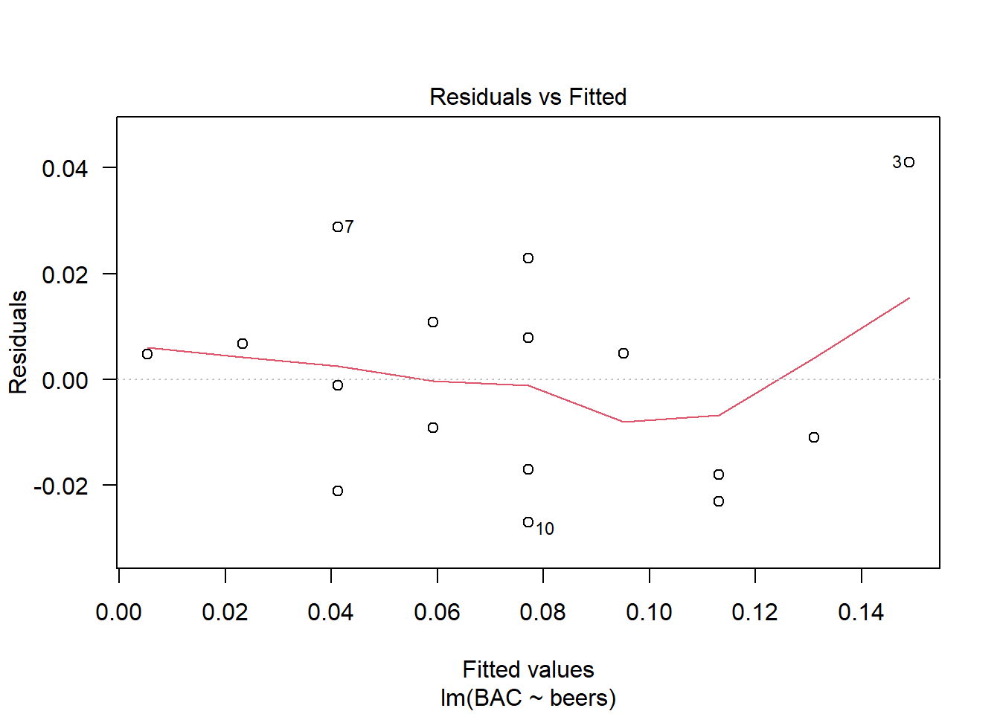
We can include sex as a predictor variable which results in the model below. In this case, we see a slight significant in the sex variable, which seems to suggest that males have on average a lower blood alcohol content than females by 0.02. The three subjects with the largest (absolute) residuals are subject 3, the female with the lowest overall weight, and subjects 6 and 9, the females with the highest overall weights. Once again, we note that without considering a subject’s weight in this regression model, the largest residuals (i.e. those points that most deviate from our fitted model) come from subjects with the largest and smallest weights.
Call:
lm(formula = BAC ~ beers + sex, data = bac)
Residuals:
Min 1Q Median 3Q Max
-0.0308247 -0.0088126 -0.0003627 0.0133905 0.0305743
Coefficients:
Estimate Std. Error t value Pr(>|t|)
(Intercept) -0.003476 0.012004 -0.290 0.7767
beers 0.018100 0.002135 8.478 1.18e-06 ***
sexmale -0.019763 0.009086 -2.175 0.0487 *
---
Signif. codes: 0 '***' 0.001 '**' 0.01 '*' 0.05 '.' 0.1 ' ' 1
Residual standard error: 0.01816 on 13 degrees of freedom
Multiple R-squared: 0.8532, Adjusted R-squared: 0.8307
F-statistic: 37.79 on 2 and 13 DF, p-value: 3.826e-06
plot(md.bac2,which=1,las=1)
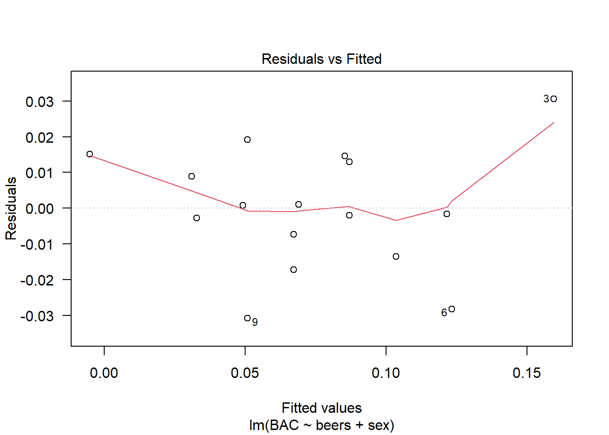
Finally, we also include weight as a predictor variable. As a result, the sex variable is no longer seen to have any statistical significance in determining blood alcohol content. We note that the range of the residuals has decreased from the previous models meaning that this last model provides a tighter fit to the data.
Call:
lm(formula = BAC ~ beers + sex + weight, data = bac)
Residuals:
Min 1Q Median 3Q Max
-0.018125 -0.005713 0.001501 0.007896 0.014655
Coefficients:
Estimate Std. Error t value Pr(>|t|)
(Intercept) 3.871e-02 1.097e-02 3.528 0.004164 **
beers 1.990e-02 1.309e-03 15.196 3.35e-09 ***
sexmale -3.240e-03 6.286e-03 -0.515 0.615584
weight -3.444e-04 6.842e-05 -5.034 0.000292 ***
---
Signif. codes: 0 '***' 0.001 '**' 0.01 '*' 0.05 '.' 0.1 ' ' 1
Residual standard error: 0.01072 on 12 degrees of freedom
Multiple R-squared: 0.9528, Adjusted R-squared: 0.941
F-statistic: 80.81 on 3 and 12 DF, p-value: 3.162e-08
plot(md.bac3,which=1,las=1)
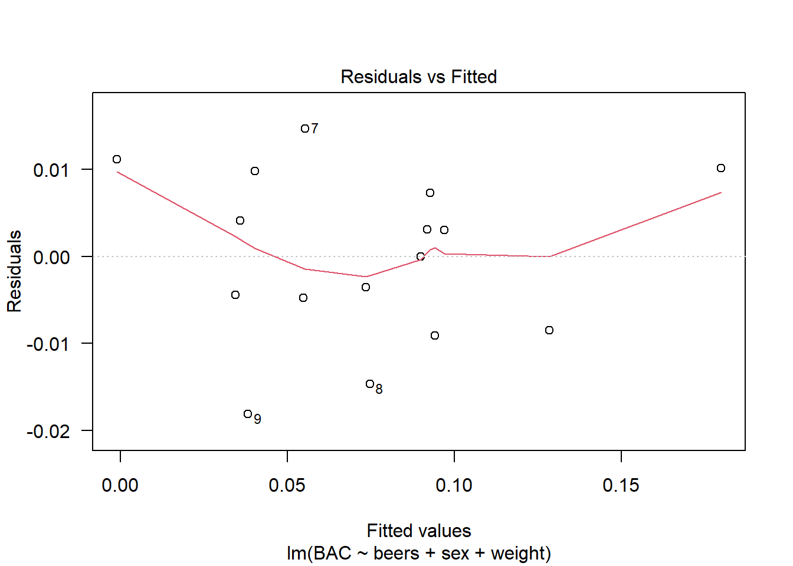
The significance of sex is the second model was only due to the males in this dataset having, on average, higher weight than the females, which can be seen in the boxplot below. Thus, these two predictor variables are confounded or correlated. This is not seen in the case of beers consumed vs sex. For our two numeric variables, beers consumed and weight, there is a slight positive correlation of about 0.25.
weight sex beers
weight 1.0000000 0.51282368 0.24887716
sex 0.5128237 1.00000000 0.02937367
beers 0.2488772 0.02937367 1.00000000
boxplot(weight~sex,data=bac,las=1)
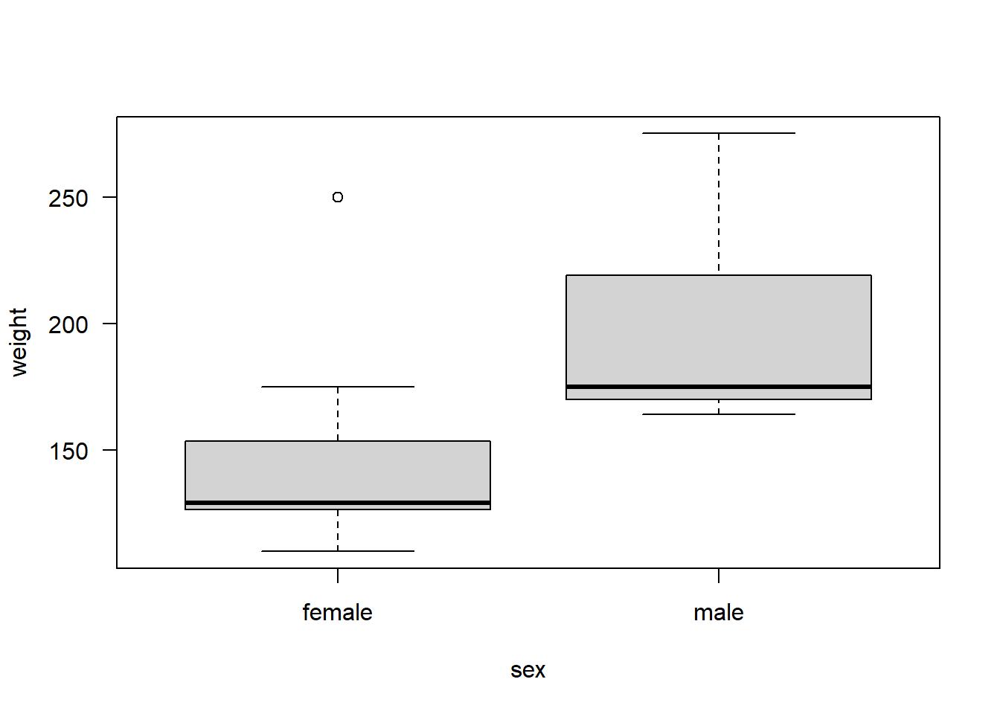
boxplot(beers~sex,data=bac,las=1)
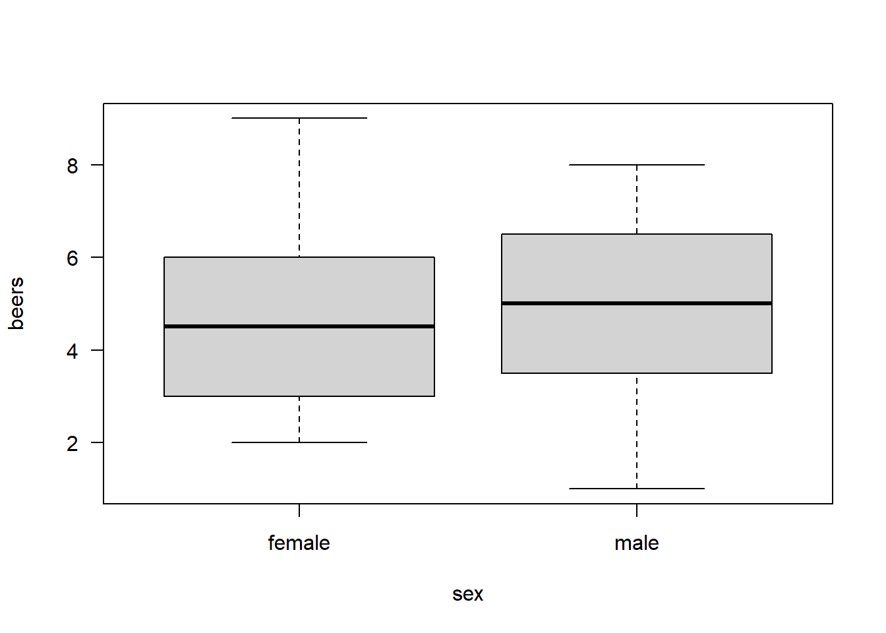
2.3 Transformation
Often, data does not follow all of the assumptions of the ordinary least squares regression model. However, it is often possible to transform data in order to correct for this deviations. We will consider such methods in the following subsections. One dissatisfying remark about such methods is that they often are applied empirically, which less euphemistically means in an add-hoc way. Sometimes there may be genuine information suggesting certain methods for transforming data. Other times, transforms are chosen because they seem to work.
2.3.1 Variance Stabilizing
One of the major requirements of the least squares model is that the variance of the errors is constant, which is that \(\mathrm{Var}\left(y_i\right) = \mathrm{Var}\left(\varepsilon_i\right) = \sigma^2\) for \(i=1,\ldots,n\). Mainly, when \(\sigma^2\) is non-constant in \(y\), problems can occur. Our goal is thus to find some transformation \(T(y)\) so that \(\mathrm{Var}\left(T(y_i)\right)\) is constant for all \(i=1,\ldots,n\).
Such a transformation \(T(\cdot)\) can be determined through a tool known as the delta method, which is beyond the scope of these notes.
See Chapter 3, Asymptotic Statistics, A W van der Vaart or Delta Method for more. However, we will consider a simplified version for our purposes. For simplicity of notation, we write \(\mathrm{E}Y = \mu\) instead of \(\mathrm{E}Y = \beta_0 + \beta_1x_1 + \ldots + \beta_p x_p\). Furthermore, assume that \(T\) is twice differentiable. Note that we only require the second derivative for a more pleasant exposition. Then, Taylor’s theorem says that \[
T(Y) = T(\mu) + T'(\mu)(Y-\mu) + \frac{T''(\xi)}{2}(Y-\mu)^2
\] for some \(\xi\) between \(Y\) and \(\mu\). We can, with a little hand-waving, ignore the higher order remainder term and just write \[
T(Y) \approx T(\mu) + T'(\mu)(Y-\mu),
\] which implies that \[
\mathrm{E}T(Y) \approx T(\mu)
~~\text{ and }~~
\mathrm{Var}\left(T(Y)\right) \approx T'(\mu)^2\mathrm{Var}\left(Y\right).
\] We want a transformation such that \(\mathrm{Var}\left(T(Y)\right) = 1\) is constant. Meanwhile, we assume that the variance of \(Y\) is a function of the mean \(\mu\), which is \(\mathrm{Var}\left(Y\right) = s(\mu)^2\). Hence, we need to solve \[
1 = T'(\mu)^2 s(\mu)^2
~~\text{ or }~~
T(\mu) = \int \frac{1}{s(\mu)}d\mu.
\]
Example 2.1 For a trivial example, assume that \(s(\mu)=\sigma\) is already constant. Then, \[
T(\mu) = \int \frac{1}{\sigma}d\mu = \mu/\sigma.
\] Thus, \(T\) is just scaling by \(\sigma\) to achieve a unit variance.
Example 2.2 Now, consider the nontrivial example with \(s(\mu) = \sqrt{\mu}\), which is that the variance of \(Y\) is a linear function of \(\mu\). Then, \[
T(\mu) = \int \frac{1}{\sqrt{\mu}} d\mu
= 2 \sqrt{\mu}.
\] This is the square root transformation, which is applied to, for example, Poisson data. The coefficient of 2 in the above derivation can be dropped as we are not concerned with the scaling.
Given that we have found a suitable transform, we can then apply it to the data \(y_1,\ldots,y_n\) to get a model of the form \[
T(y) = \beta_0 + \beta_1x_1 + \ldots + \beta_px_p + \varepsilon
\] where the variance of \(\varepsilon\) is constant–i.e not a function of the regressors.
2.3.2 Linearization
Another key assumption is that the relationship between the regressors and response, \(x\) and \(y\), is linear. If there is reason to believe that \[
y = f( \beta_0 + \beta_1x_1 +\ldots+ \beta_px_p + \varepsilon)
\] and that \(f(\cdot)\) is invertible, then we can rewrite this model as \[
y' = f^{-1}(y) = \beta_0 + \beta_1x_1 +\ldots+ \beta_px_p + \varepsilon
\] and apply our usual linear regression tools.
An example from the textbook, which is also quite common in practice, is to assume that \[
y = c \mathrm{e}^{ \beta_1 x_1 + \ldots + \beta_px_p + \varepsilon}
\] and apply a logarithm to transform to \[
y' = \log y = \beta_0 + \beta_1x_1 +\ldots+ \beta_px_p + \varepsilon
\] where \(\beta_0 = \log c\). Furthermore, if \(\varepsilon\) has a normal distribution then \(\mathrm{e}^\varepsilon\) has a log-normal distribution. This model is particularly useful when one is dealing with exponential growth in some population.
Remark 2.2. Linearization by applying a function to \(y\) looks very similar to the variance stabilizing transforms of the previous section. In fact, such transforms have an effect on both the linearity and the variance of the model and should be used with care. Often non-linear methods are preferred.
Sometimes it is beneficial to transform the regressors, \(x\)’s, as well. As we are not treating them as random variables, there are less problems to consider. \[
~~~~~~y = \beta_0 + \beta_1 f(x) + \varepsilon
~~\Rightarrow~~
y = \beta_0 + \beta_1 x' + \varepsilon,~~ x = f^{-1}(x')
\] Examples include \[\begin{align*}
y = \beta_0 + \beta_1 \log x + \varepsilon
~~&\Rightarrow~~
y = \beta_0 + \beta_1 x' + \varepsilon,~~ x = \mathrm{e}^{x'}\\
y = \beta_0 + \beta_1 x^2 + \varepsilon
~~&\Rightarrow~~
y = \beta_0 + \beta_1 x' + \varepsilon,~~ x = \sqrt{x'}
\end{align*}\] This second example can be alternatively dealt with by employing polynomial regression to be discussed in a subsequent section.
2.3.3 Box-Cox and the power transform
In short, Box-Cox is a family of transforms parametrized by some \(\lambda\in\mathbb{R}\), which can be optimized via maximum likelihood. Specifically, for \(y_i>0\), we aim to choose the best transform of the form \[
y_i \rightarrow y_i^{(\lambda)} = \left\{\begin{array}{ll}
\frac{y_i^\lambda-1}{\lambda} & \lambda\ne0\\
\log y_i & \lambda=0
\end{array}\right.
\] by maximizing the likelihood as we did in Chapter 1, but with parameters \(\beta\), \(\sigma^2\), and \(\lambda\).
To do this, we assume that the transformed variables follow all of the usual least squares regression assumptions and hence have a joint normal distribution with \[
f( Y^{(\lambda)} ) = (2\pi\sigma^2)^{-n/2}\exp\left(
-\frac{1}{2\sigma^2}\sum_{i=1}^n(y_i - X_{i,\cdot}\beta)^2
\right).
\] Transforming \(Y \rightarrow Y^{(\lambda)}\) is a change of variables with Jacobian \[
\prod_{i=1}^n\frac{dy_i}{dy_i}^{(\lambda)} = \prod_{i=1}^ny_i^{\lambda-1}.
\] Hence, the likelihood function in terms of \(X\) and \(y\) is \[
L(\beta,\sigma^2,\lambda|y,X) =
(2\pi\sigma^2)^{-n/2}\exp\left(
-\frac{1}{2\sigma^2}\sum_{i=1}^n(y_i^{\lambda} - X_{i,\cdot}\beta)^2
\right) \prod_{i=1}^n y_i^{\lambda-1}
\] with log likelihood \[
\log L =
-\frac{n}{2}\log( 2\pi\sigma^2 )
-\frac{1}{2\sigma^2}\sum_{i=1}^n(y_i - X_{i,\cdot}\beta)^2
+ (\lambda-1)\sum_{i=1}^n \log y_i.
\] From here, the MLEs for \(\beta\) and \(\sigma^2\) are solved for as before but are now in terms of the transformed \(Y^{(\lambda)}\). \[\begin{align*}
\hat{\beta} &= ({X}^\mathrm{T}X)^{-1}{X}^\mathrm{T}Y^{(\lambda)}\\
\hat{\sigma}^2
&= \frac{1}{n}\sum_{i=1}^n(y_i^{(\lambda)}-X_{i,\cdot}\hat{\beta})^2
= \frac{SS_\text{res}^{(\lambda)}}{n}.
\end{align*}\] Plugging these into the log likelihood gives and replacing all of the constants with some \(C\) gives \[\begin{align*}
\log L &=
-\frac{n}{2}\log( 2\pi\hat{\sigma}^2 )
-\frac{n}{2} + (\lambda-1)\sum_{i=1}^n \log y_i\\
&= C - \frac{n}{2}\log\hat{\sigma}^2 +
\log\left( (\prod y_i)^{\lambda-1}\right).
\end{align*}\] Defining the geometric mean of the \(y_i\) to be \(\gamma = (\prod_{i=1}^n y_i)^{1/n}\), we have \[\begin{align*}
\log L
&= C - \frac{n}{2}\log\hat{\sigma}^2 +
\frac{n}{2}\log\left( \gamma^{2(\lambda-1)}\right)\\
&= C - \frac{n}{2}\log\left(
\frac{\hat{\sigma}^2}{\gamma^{2(\lambda-1)}}
\right).
\end{align*}\] Considering the term inside the log, we have that it is just the residual sum of squares from the least squares regression \[
\frac{Y^{(\lambda)}}{\gamma^{\lambda-1}} = X\theta + \varepsilon
\] where \(\theta\in\mathbb{R}^{p+1}\) is a transformed version of the original \(\beta\). Hence, we can choose \(\hat{\lambda}\) by maximizing the log likelihood above, which is equivalent to minimizing the residual sum of squares for this new model. This can be calculated numerically in statistical programs like R.
2.3.4 Cars Data
To test some of these linearization techniques, we consider the cars dataset, which is included in the standard distribution of R. It consists of 50 observations of a car’s speed and a car’s stopping distance. The goal is to model and predict the stopping distance given the speed of the car. Such a study could be used, for example, for influencing speed limits and other road rules for the sake of public safety. The observed speeds range from 4 to 25 mph.
We can first fit a simple regression to the data with lm( dist~speed, data=cars). This results in a significant p-value, an \(R^2 = 0.651\), and an estimated model of \[
(\text{dist}) = -17.6 + 3.9(\text{speed}) + \varepsilon.
\] If we wanted to extrapolate a bit, we can use this model to predict the stopping distance for a speed of 50 mph, which is 179 feet.
Call:
lm(formula = dist ~ speed, data = cars)
Residuals:
Min 1Q Median 3Q Max
-29.069 -9.525 -2.272 9.215 43.201
Coefficients:
Estimate Std. Error t value Pr(>|t|)
(Intercept) -17.5791 6.7584 -2.601 0.0123 *
speed 3.9324 0.4155 9.464 1.49e-12 ***
---
Signif. codes: 0 '***' 0.001 '**' 0.01 '*' 0.05 '.' 0.1 ' ' 1
Residual standard error: 15.38 on 48 degrees of freedom
Multiple R-squared: 0.6511, Adjusted R-squared: 0.6438
F-statistic: 89.57 on 1 and 48 DF, p-value: 1.49e-12
predict(md.car.lin,data.frame(speed=50))
1
179.0413
We could stop here and be happy with a significant fit. However, looking at the data, there seems to be a nonlinear relationship between speed and stopping distance. Hence, we could try to fit a model with the response being the square root of the stopping distance: lm( sqrt(dist)~speed, data=cars). Doing so results in \[
\sqrt{(\text{dist})} = 1.28 + 0.32(\text{speed}) + \varepsilon.
\] In this case, we similarly get a significant p-value and a slightly higher \(R^2 = 0.709\). The prediction for the stopping distance for a speed of 50 mph is now the much higher 302 feet.
Call:
lm(formula = sqrt(dist) ~ speed, data = cars)
Residuals:
Min 1Q Median 3Q Max
-2.0684 -0.6983 -0.1799 0.5909 3.1534
Coefficients:
Estimate Std. Error t value Pr(>|t|)
(Intercept) 1.27705 0.48444 2.636 0.0113 *
speed 0.32241 0.02978 10.825 1.77e-14 ***
---
Signif. codes: 0 '***' 0.001 '**' 0.01 '*' 0.05 '.' 0.1 ' ' 1
Residual standard error: 1.102 on 48 degrees of freedom
Multiple R-squared: 0.7094, Adjusted R-squared: 0.7034
F-statistic: 117.2 on 1 and 48 DF, p-value: 1.773e-14
# Note that we have to use ( )^2 to get our # prediction on the right scalepredict(md.car.sqrt,data.frame(speed=50))^2
1
302.6791
We can further apply a log-log transform with lm( log(dist)~log(speed), data=cars). This results in an even higher \(R^2=0.733\). The fitted model is \[
\log(y) = -0.73 + 1.6 \log(x) + \varepsilon,
\] and the predicted stopping distance for a car travelling at 50 mph is 254 feet. Note that the square root transform is modelling \(y \propto x^2\) whereas the log-log transform is modelling \(y \propto x^{1.6}\), which is a slower rate of increase.
Call:
lm(formula = log(dist) ~ log(speed), data = cars)
Residuals:
Min 1Q Median 3Q Max
-1.00215 -0.24578 -0.02898 0.20717 0.88289
Coefficients:
Estimate Std. Error t value Pr(>|t|)
(Intercept) -0.7297 0.3758 -1.941 0.0581 .
log(speed) 1.6024 0.1395 11.484 2.26e-15 ***
---
Signif. codes: 0 '***' 0.001 '**' 0.01 '*' 0.05 '.' 0.1 ' ' 1
Residual standard error: 0.4053 on 48 degrees of freedom
Multiple R-squared: 0.7331, Adjusted R-squared: 0.7276
F-statistic: 131.9 on 1 and 48 DF, p-value: 2.259e-15
# Note that we have to use exp( ) to get our # prediction on the right scaleexp( predict(md.car.log,data.frame(speed=50)) )
1
254.4037
We can also let the data decide on the best transformation by using the Box-Cox transformation. In this case, we may want to test the hypothesis that the optimal power to transform with is 1/2; i.e. the square root transformation. The Box-Cox transform choose a power of \(\lambda=0.424\). However, the value 1/2 lies within the confidence interval for \(\lambda\). We may prefer to use the square root transform instead of the power 0.424, since the square root is more interpretable.
# Need the package MASS for boxcoxlibrary(MASS)# Do the Box-Cox transformbc =boxcox(md.car.lin);abline(v=c(0.5),col=c('red'))
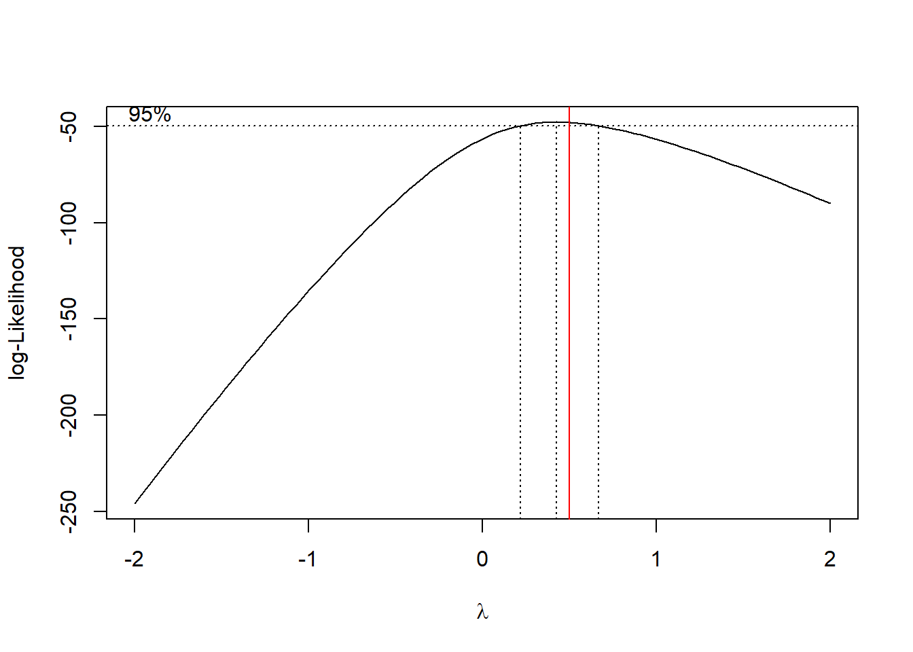
lmb = bc$x[ which.max(bc$y) ];print(paste("Optimal lambda is ",lmb))
Call:
lm(formula = distBC ~ speed, data = carsBC)
Residuals:
Min 1Q Median 3Q Max
-3.0926 -1.0444 -0.3055 0.7999 4.7520
Coefficients:
Estimate Std. Error t value Pr(>|t|)
(Intercept) 1.08227 0.73856 1.465 0.149
speed 0.49541 0.04541 10.910 1.35e-14 ***
---
Signif. codes: 0 '***' 0.001 '**' 0.01 '*' 0.05 '.' 0.1 ' ' 1
Residual standard error: 1.681 on 48 degrees of freedom
Multiple R-squared: 0.7126, Adjusted R-squared: 0.7066
F-statistic: 119 on 1 and 48 DF, p-value: 1.354e-14
The four models considered are plotted below. As we move away from the range of the regressors–i.e 4 to 25 mph–the models begin to diverge making extrapolating a bit dangerous.
In the following subsections, we will only consider models with a single regressor\(x\in\mathbb{R}\) until the final part below where we will consider polynomials in multiple variables \(x_1,\ldots,x_p\).
One of the examples of atypical residual behavior from above occurs when there is an unaccounted for quadratic term in the model such as trying to fit a model of the form \[
y = \beta_0 + \beta_1x_1 +\varepsilon
\] to data generated by \[
y = \beta_0 + \beta_1x_1^2 + \varepsilon.
\] If this is suspected, we can look at the residuals and try to transform \(x\), such as \(x \rightarrow \sqrt{x}\), in order to put this back into the linear model framework. However, we can also just fit a polynomial model to our data.
Consider the setting where we observe \(n\) data pairs \((y_i,x_i)\in\mathbb{R}^2\). We can then attempt to fit a model of the form \[
y = \beta_0 + \beta_1x + \beta_2x^2 + \ldots + \beta_px^p + \varepsilon
\] to the observations. The \(n\times p\) design matrix will look like \[
X = \begin{pmatrix}
1 & x_1 & x_1^2 & \ldots & x_1^p \\
1 & x_2 & x_2^2 & \ldots & x_2^p \\
\vdots & \vdots & \vdots &\ddots & \vdots\\
1 & x_n & x_n^2 & \ldots & x_n^p
\end{pmatrix}
\] and the parameters can be estimated as usual: \(\hat{\beta} = ({X}^\mathrm{T}X)^{-1}{X}^\mathrm{T}Y\). This matrix arises in Linear Algebra as the Vandermonde matrix.
Remark 2.3. While the columns of \(X\) are, in general, linearly independent, as \(p\) gets larger, many problems can occur. In particular, the columns become near linearly dependent resulting in instability when computing \(({X}^\mathrm{T}X)^{-1}\).
2.4.1 Model Problems
Polynomial regression is very powerful for modelling, but can also lead to very erroneous results if used incorrectly. What follows are some potential issues to take into consideration.
2.4.1.1 Overfitting
As a general rule, the degree of the polynomial model should be kept as low as possible. High order polynomials can be misleading as they can often fit the data quite well. In fact, given \(n\) data points, it is possible to fit an \(n-1\) degree polynomial that passes through each data point. In this extreme case, all of the residuals would be zero, but we would never expect this to be the correct model for the data.
Problems can occur even when \(p\) is much smaller than \(n\). As an example, two models were fit to \(n=50\) data points generated from the model \[
y = 3x^2 + \varepsilon
\] with \(\varepsilon\sim\mathcal{N}\left(0,1\right)\). The first was a cubic model. The second was a degree 20 model. The first regression resulted in three significant regressors. Note that in these two cases, orthogonal polynomials were used to maintain numerical stability.
set.seed(128)# Simulate some regression data with# a quadratic trendxx =seq(0,2,0.05)len =length(xx)yy =3*xx^2+rnorm(n=len,0,1)# Fit a cubic model using orthogonal polynomials# and extract the most significant termsmd3 <-lm( yy~poly(xx,3) )sm3 <-summary(md3)sm3$coefficients[which(sm3$coefficients[,4]<0.01),]
# Fit a degree-20 model using orthogonal polynomials# and extract the most significant termsmd20 <-lm( yy~poly(xx,20) )sm20<-summary(md20)sm20$coefficients[which(sm20$coefficients[,4]<0.01),]
# Plot the data and modelsplot( xx,yy, xlab='X',ylab="Y",las=1 )lines( xx, 3*xx^2,col='black',lty=1 )lines( xx, predict(md3),col='red',lty=2,lwd=2 )lines( xx, predict(md20),col='blue',lty=2,lwd=2 )legend("topleft",legend =c("Truth","Cubic","Deg20"),col =c("black","red","blue"), lty=1:3,lwd=2)
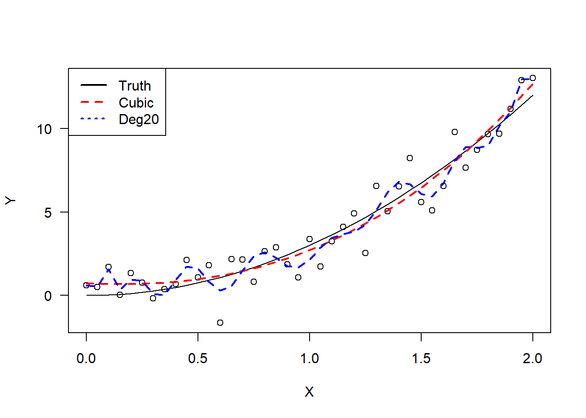
2.4.1.2 Extrapolating
The overfitting from the previous section also indicates problems that can occur when extrapolating with polynomial models. When high degrees are present, the best fit curve can change directions quickly and even make impossible or illogical predictions.
Beyond that, even when the fitted polynomial models all trend in the same general direction, polynomials of different degree will diverge quickly from one another. Consider a model where the data are generated from \[
y = 2x + 3x^3 + \varepsilon.
\] All four models displayed below generated very significant F tests. However, each one will give very different answers to predicting the value of \(y\) when \(x=5\).
set.seed(128)# Simulate some regression data with# a quadratic trendxx =seq(0,2,0.05)len =length(xx)yy =2*xx +3*xx^3+rnorm(n=len,0,1)# Fit some low degree polynomial modelsmd1 =lm( yy~poly(xx,1) )md2 =lm( yy~poly(xx,2) )md3 =lm( yy~poly(xx,3) )md4 =lm( yy~poly(xx,4) )# plot the models (interpolate)plot(xx,yy,las=1,xlab="X",ylab="Y",main="Interpolation")lines(xx,predict(md1),lty=1,col=1,lwd=2)lines(xx,predict(md2),lty=2,col=2,lwd=2)lines(xx,predict(md3),lty=3,col=3,lwd=2)lines(xx,predict(md4),lty=4,col=4,lwd=2)legend("topleft",legend =c("linear","quad","cube","quart"),lty=1:4,col=1:4,lwd=2)
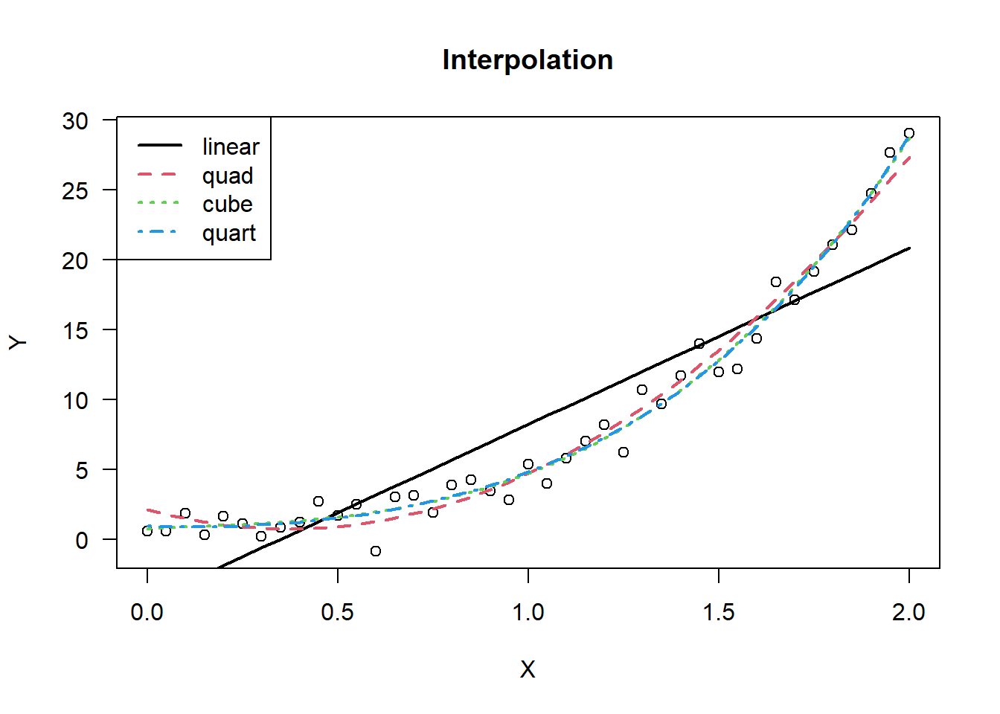
# plot the models (extrapolate)xx.ext =seq(0,5,0.05)plot( xx,yy,las=1,xlab="X",ylab="Y",main="Extrapolation",xlim=c(0,5),ylim=c(min(yy),200))lines(xx.ext,predict(md1,data.frame(xx=xx.ext)),lty=1,col=1,lwd=2)lines(xx.ext,predict(md2,data.frame(xx=xx.ext)),lty=2,col=2,lwd=2)lines(xx.ext,predict(md3,data.frame(xx=xx.ext)),lty=3,col=3,lwd=2)lines(xx.ext,predict(md4,data.frame(xx=xx.ext)),lty=4,col=4,lwd=2)legend("topleft",legend =c("linear","quad","cube","quart"),lty=1:4,col=1:4,lwd=2)
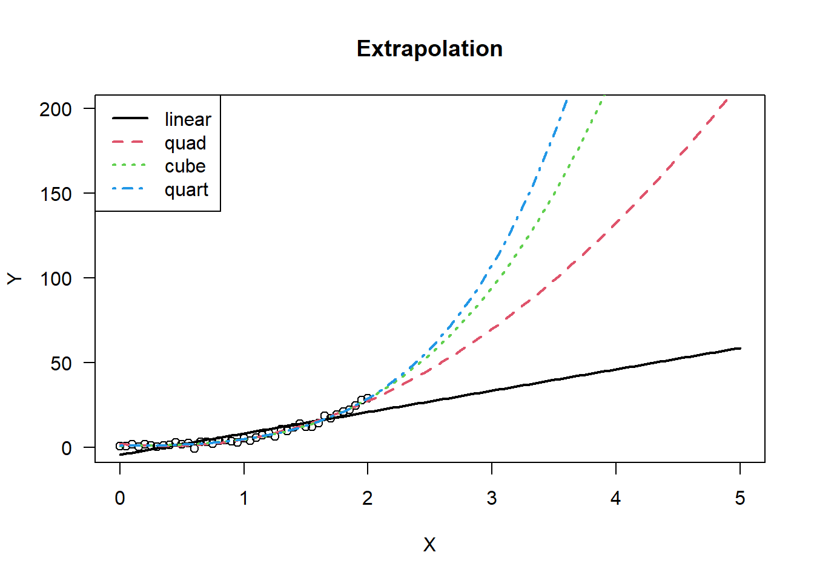
2.4.1.3 Hierarchy
An hierarchical polynomial model is one such that if it contains a term of degree \(k\), then it will contain all terms of order \(i=0,1\ldots,k-1\) as well. In practice, it is not strictly necessary to do this. However, doing so will maintain invariance to linear shifts in the data.
Consider the simple linear regression model \(y = \beta_0 + \beta_1 x + \varepsilon\). If we were to shift the values of \(x\) by some constant \(a\), then \[\begin{align*}
y
&= \beta_0 + \beta_1 (x+a)+ \varepsilon\\
&= (\beta_0+a\beta_1) + \beta_1 x + \varepsilon\\
&= \beta_0' + \beta_1 x + \varepsilon
\end{align*}\] and we still have the same model but with a modified intercept term.
Now consider the polynomial regression model \(y = \beta_0 + \beta_2 x^2 + \varepsilon\). If we were to similarly shift the values of \(x\) by some constant \(a\), then \[\begin{align*}
y
&= \beta_0 + \beta_2 (x+a)^2+ \varepsilon\\
&= (\beta_0+a^2\beta_2) + 2\beta_2ax + \beta_2 x^2 + \varepsilon\\
&= \beta_0' + \beta_1' x + \beta_2 x^2 + \varepsilon.
\end{align*}\] Now, our model has a linear term, that is \(\beta_1'x\), in it, which was not there before.
In general, for a degree \(p\) model, if \(x\) is shifted by some constant \(a\), then \[
y = \beta_0 + \sum_{i=1}^p \beta_ix^i
~~\Rightarrow~~
y = \beta_0' + \sum_{i=1}^p \beta_i'x^i.
\] Thus, the model is invariant under linear translation.
2.4.2 Piecewise Polynomials
While a single high degree polynomial can be fit very closely to the observed data, there exist the already discussed problems of overfitting and subsequent extrapolation. Hence, an alternative to capture the behaviour of highly nonlinear data is to apply a piecewise polynomial model, which is often referred to as a spline model.
To begin, assume that the observed regressors take values in the interval \([a,b]\). Then, we partition the interval with \(k+1\) by \(a=t_1 < t_2 < \ldots < t_{k+1}=b\). The general spline model of order \(p\) takes on the form \[
y = \sum_{j=1}^k \beta_{0,j}\boldsymbol{1}\!\left[x\ge t_j\right] +
\sum_{i=1}^p \sum_{j=1}^k \beta_{i,j}( x - t_j )^i_+
\tag{2.1}\] where \(\boldsymbol{1}\!\left[x>t_j\right]\) is the indicator function that takes on a value of \(0\) when \(x<t_j\) and a value of \(1\) otherwise, and where \(( x - t_j )^i_+ = ( x - t_j )^i\boldsymbol{1}\!\left[x>t_j\right]\).
Equation 2.1 is equivalent to fitting a separate \(p\)th order polynomial to the data in each interval \([t_j,t_{j+1}]\). While doing so does result in many parameters to estimate, it will allow us to perform hypothesis tests for continuity and differentiability of the data, which we will discuss in the next section.
Submodels of Equation 2.1 have a collection of interesting properties. If the coefficients \(\beta_{0,j}\) are set to \(0\), then we will fit a model that ensures continuity at the knots. For example, the model \[
y = \beta_{0,1} + \sum_{j=1}^k \beta_{1,j}( x-t_j )_+
\] is a piecewise linear model with continuity at the knots. Conversely, a model of the form \[
y = \sum_{j=1}^k \beta_{0,j} \boldsymbol{1}\!\left[ x\ge t_j \right]
\] fits a piecewise constant model and can be used to look for change points in an otherwise constant process.
In practice, spline models with only cubic terms are generally preferred as they have a high enough order to ensure a good amount of smoothness–i.e. the curves are twice continuously differentiable–but generally do not lead to overfitting of the data.
2.4.2.1 A Spline Example
Note that there are R packages to fit spline models to data. However, in this example we will do it manually for pedagogical purposes.
Consider a model of the form \[
y = 2+3x-4x^5+x^7 + \varepsilon
\] with \(\varepsilon\sim\mathcal{N}\left(0,4\right)\) with \(n=41\) observations with regressor \(x\in[0,2]\). A degree 4 and degree 7 polynomial regression were fit to the data, and the results are displayed below. These deviate quickly from the true curve outside of the range of the data.
set.seed(256)# Generate Data from a degree-7 polynomialxx =seq(0,2,0.05)len =length(xx)yy =2+3*xx -4*xx^5+ xx^7+rnorm(len,0,4)# Fit degree 4 and degree 7 modelsmd4 =lm( yy~poly(xx,4) )md7 =lm( yy~poly(xx,7) )# Plot polynomial models plot( xx,yy,las=1,xlab="X",ylab="Y" )lines( xx, 2+3*xx -4*xx^5+ xx^7, col='gray',lwd=2,lty=1 )lines( xx, predict(md4), col='red',lwd=2,lty=2 )lines( xx, predict(md7), col='blue',lwd=2,lty=3 )legend("bottomleft",legend =c("Truth","Deg 4","Deg 7"),col=c("gray","red","blue"),lty=1:3,lwd=2)
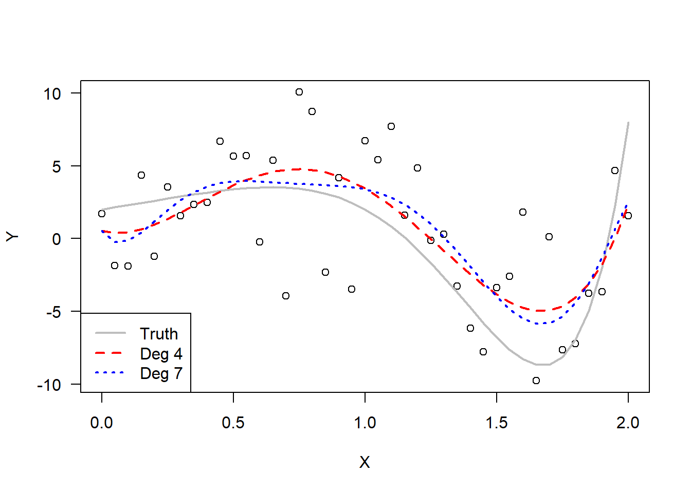
The next plot fits a piecewise linear spline with 6 knots–i.e. \(k=5\). The model is of the form \[
y = \beta_{0,1} + \beta_{1,1}( x-0.0 )_+ + \beta_{1,2}( x-0.4 )_+ +
\ldots + \beta_{1,5}( x-1.6 )_+.
\]
# Manually creating the inputs to the regression modelknt =c(1,9,17,25,33)reg1 =c(rep(0,knt[1]-1),xx[knt[1]:len] - xx[knt[1]]);reg2 =c(rep(0,knt[2]-1),xx[knt[2]:len] - xx[knt[2]]);reg3 =c(rep(0,knt[3]-1),xx[knt[3]:len] - xx[knt[3]]);reg4 =c(rep(0,knt[4]-1),xx[knt[4]:len] - xx[knt[4]]);reg5 =c(rep(0,knt[5]-1),xx[knt[5]:len] - xx[knt[5]]);# Fit linear spline modelmd.1spline <-lm( yy~reg1+reg2+reg3+reg4+reg5 )# Plot the linear spline modelplot( xx,yy,las=1,xlab="X",ylab="Y")lines( xx, 2+3*xx -4*xx^5+ xx^7, col='gray',lwd=2,lty=1 )lines( xx,predict(md.1spline),lwd=2,col='red')legend("bottomleft",legend =c("Truth","Linear Spline"),col=c("gray","red"),lty=1,lwd=2)
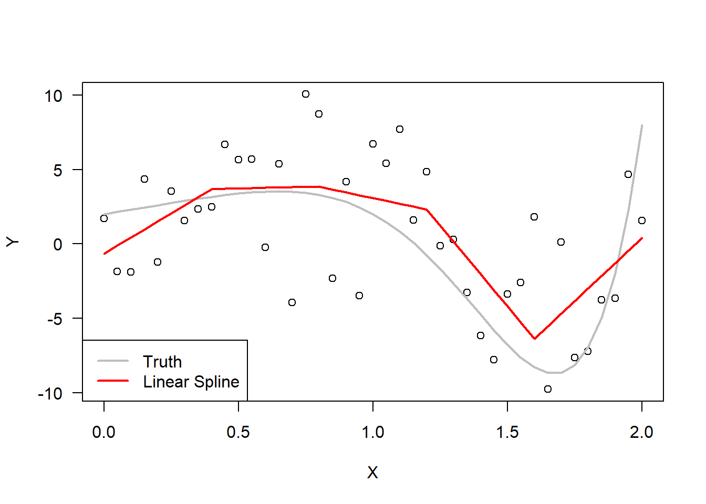
The final plot fits a spline with only piecewise cubic terms and a spline with cubic and linear terms. The only cubic model provides a very reasonable approximation to the data. The cubic-linear spline model becomes a bit crazy.
# Manually creating the inputs to the regression modelknt =c(1,9,17,25,33)cub1 =c(rep(0,knt[1]-1),xx[knt[1]:len] - xx[knt[1]])^3;cub2 =c(rep(0,knt[2]-1),xx[knt[2]:len] - xx[knt[2]])^3;cub3 =c(rep(0,knt[3]-1),xx[knt[3]:len] - xx[knt[3]])^3;cub4 =c(rep(0,knt[4]-1),xx[knt[4]:len] - xx[knt[4]])^3;cub5 =c(rep(0,knt[5]-1),xx[knt[5]:len] - xx[knt[5]])^3;# Fit cubic spline modelmd.3spline <-lm( yy~cub1+cub2+cub3+cub4+cub5 )# Fit linear and cubic spline modelmd.13spline <-lm( yy~reg1+reg2+reg3+reg4+reg5+cub1+cub2+cub3+cub4+cub5 )# Plot the linear spline modelplot( xx,yy,las=1,xlab="X",ylab="Y")lines( xx, 2+3*xx -4*xx^5+ xx^7, col='gray',lwd=2,lty=1 )lines( xx,predict(md.3spline),lwd=2,col='red')lines( xx,predict(md.13spline),lwd=2,col='green',lty=2)legend("bottomleft",legend =c("Truth","Cubic Spline","Cubic & Linear"),col=c("gray","red","green"),lty=c(1,1,2),lwd=2)
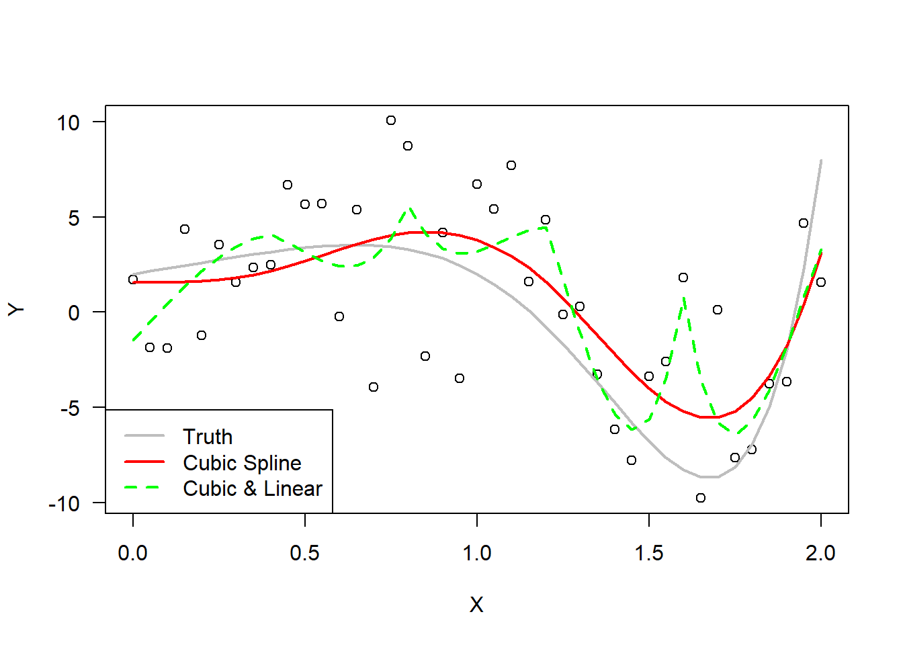
2.4.2.2 Hypothesis testing for spline models
It is useful to consider what the hypothesis tests mean in the context of spline models. For example, consider fitting the piecewise constant model to some data: \[
y = \sum_{j=1}^k \beta_{0,j} \boldsymbol{1}\!\left[ x\ge t_j \right].
\] The usual F-test will consider the hypotheses \[
H_0: \beta_{0,2}=\ldots=\beta_{0,k}=0~~~~~~
H_1: \exists i\in\{2,3,\ldots,k\}~\text{s.t.}~\beta_{0,i}\ne0.
\] This hypothesis is asking whether or not we believe the mean of the observations changes as \(x\) increases. Note that \(\beta_{0,1}\) is the overall intercept term in this model.
We can also compare two different spline models with a partial F-test. For example, \[\begin{align*}
&\text{Model 1:}& y&= \beta_{0,1} +
\textstyle
\sum_{j=1}^k \beta_{3,j}( x-t_j )^3_+\\
&\text{Model 2:}& y&= \beta_{0,1} +
\textstyle
\sum_{j=2}^k \beta_{0,j} \boldsymbol{1}\!\left[ x\ge t_j \right]+
\sum_{j=1}^k \beta_{3,j}( x-t_j )^3_+
\end{align*}\] The partial F-test between models 1 and 2 asks whether or not the addition of the piecewise constant terms adds any explanatory power to our model. Equivalently, it is testing for whether or not the model has any discontinuities in it. Similarly, first order terms can be used to test for differentiability.
Instead of constructing a bigger model by adding polynomial terms of different orders, it is also possible to increase the number of knots in the model. Similar to all of the past examples, we will require that the new set of knots contains the old set–that is, \(\{t_1,\ldots,t_k\}\subset\{s_1,\ldots,s_m\}\).
This requirement ensures that our models are nested and thus can be compared in an ANOVA table.
In what we considered above, the spline models were comprised of polynomials with supports of the form \([t_j,\infty)\) for knots \(t_1<\ldots<t_k\). However, there are many different families of splines with different desirable properties. Some such families are the B-splines, Non-uniform rational B-splines (NURBS), box splines, Bézier splines, and many others. Here we will briefly consider the family of B-splines due to their simplicity and popularity. Note that in the spline literature, sometimes the knots are referred to as control points.
The ultimate goal of the of the B-splines is to construct a polynomial basis where the constituent polynomials have finite support. Specifically, for an interval \([a,b]\) and knots \(a=t_1<t_2<\ldots<t_k<t_{k+1}=b\), the constant polynomials will have support on two knots such as \([t_1,t_2]\), the linear terms on three knots such as \([t_1,t_3]\), and so on up to degree \(p\) terms, which require \(p+2\) knots.
B-splines can be defined recursively starting with the constant, or degree 0, terms: \[
B_{j,0}(x) = \boldsymbol{1}_{ x\in[t_j,t_{j+1}] },
\] which takes a value of 1 on the interval \([t_j,t_{j+1}]\) and is 0 elsewhere. From here, the higher order terms can be written as \[
B_{j,i}(x) =
\left(\frac{x-t_j}{t_{j+i}-t_{j}}\right)B_{j,i-1}(x) +
\left(\frac{t_{j+i+1}-x}{t_{j+i+1}-t_{j+1}}\right)B_{j+1,i-1}(x).
\] For example, with knots \(\{0,1,2,3\}\), we have \[\begin{align*}
&\text{Constant:}&
B_{j,0} &= \boldsymbol{1}_{ x\in[j,j+1] }&j&=0,1,2\\
&\text{Linear:}&
B_{j,1} &= \left\{
\begin{array}{ll}
(x-j),& x\in[j,j+1] \\
(j+2-x),& x\in[j+1,j+2]
\end{array}
\right. &j&=0,1\\
&\text{Quadratic:}&
B_{j,2} &= \left\{
\begin{array}{ll}
x^2/2,& x\in[0,1] \\
(-2x^2+6x-3)/2,& x\in[1,2] \\
(3-x)^2/2,& x\in[2,3]
\end{array}
\right. &j&=0.\\
\end{align*}\] The linear and quadratic splines are displayed below.
xx =seq(0,3,0.1)lin1 =c(xx[1:11],2-xx[12:21],rep(0,10))lin2 =rev(lin1)quad =c( xx[1:11]^2/2,(-2*xx[12:21]^2+6*xx[12:21]-3)/2, (3-xx[22:31])^2/2)plot(0,0,type='n',las=1,xlim=c(0,3),ylim=c(0,1),xlab="X",ylab="Y")lines(xx,lin1,lty=2,col=2,lwd=2)lines(xx,lin2,lty=3,col=3,lwd=2)lines(xx,quad,lty=4,col=4,lwd=2)abline(v=0:3,col='gray')
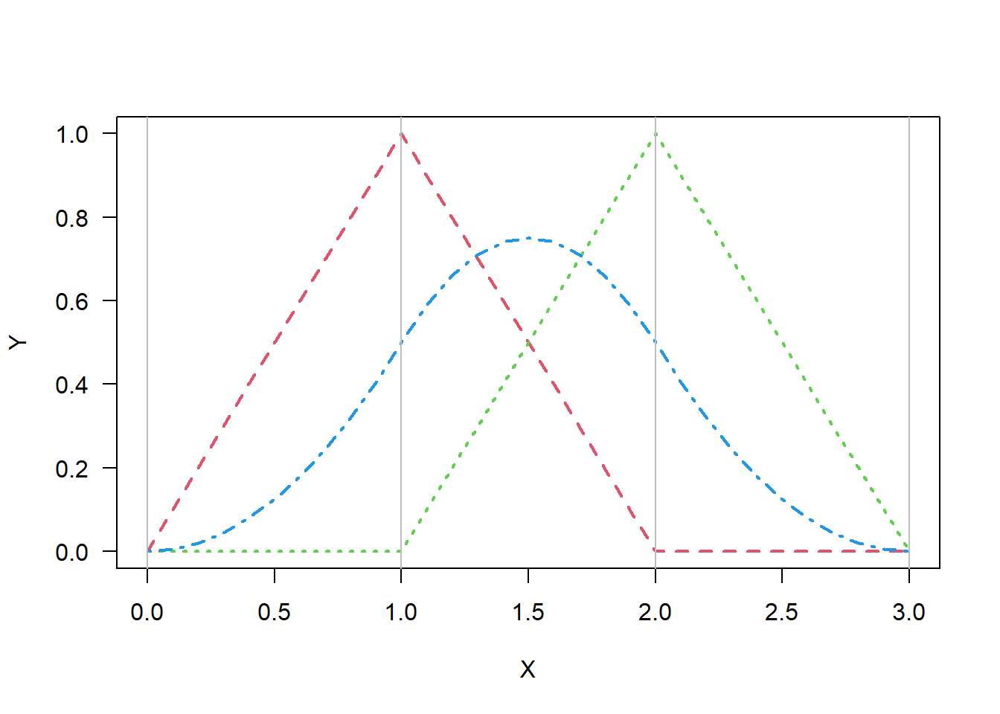
Just as we fit a spline model above, we could use the linear regression tools to fit a B-spline model of the form \[
y = \sum_{i=0}^p \sum_{j=1}^{k-i} \beta_{i,j} B_{j,i}(x).
\] Here, we require that \(k>p\) as we will at least need knots \(t_1,\ldots,t_{p+1}\) for a \(p\)th degree polynomial. The total number of terms in the regression, which is number of parameters \(\beta_{i,j}\) to estimate, is \[
k + (k-1) + \ldots + (k-p).
\]
2.4.3 Interacting Regressors
Thus far in this section, we have considered only polynomial models with a single regressor. However, it is certainly possible to fit a polynomial model for more than one regressor such as \[
y = \beta_0 + \beta_{1}x_1 + \beta_{2}x_2
+ \beta_{11} x_1^2 + \beta_{12} x_1x_2 + \beta_{22}x_2^2 +
\varepsilon.
\] Here we have linear and quadratic terms for \(x_1\) and \(x_2\) as well as an interaction term \(\beta_{12}x_1x_2\).
Fitting such models to the data follows from what we did for single variable polynomials. In this case, the number of interaction terms can grow quite large in practice. With \(k\) regressors, \(x_1,\ldots,x_k\), there will be \(k\choose p\) interaction terms of degree \(p\) assuming \(p<k\). This leads to the topic of Response Surface Methodology, which is a subtopic of the field of experimental design.
We will not consider this topic further in these notes. However, it is worth noting that in R, it is possible to fit a linear regression with interaction terms such as \[
y = \beta_0 + \beta_1x_1 + \beta_2x_2 + \beta_3x_3 +
\beta_{12}x_1x_2 + \beta_{13}x_1x_3 + \beta_{23}x_2x_3 +
\beta_{123}x_1x_2x_3 +\varepsilon
\] with the simple syntax lm( y~x1*x2*x3 ) where the symbol * replaces the usual + from before.
2.5 Influence and Leverage
The overall intuition for this section is that each observation does not have an equal influence on the estimation of \(\hat{\beta}\). If a given observed regressor \(x\) lies far from the other observed values, it can have a strong effect on the least squares regression line. The goal of this section is to identify such points or subset of points that have a large influence on the regression.
If we use the R command lm() to fit a linear model to some data, then we can use the command influence.measures() to compute an array of diagnostic metrics for each observation to test its influence on the regression. The function influence.measures() computes DFBETAS, DFFITS, covariance ratios, Cook’s distances and the diagonal elements of the so-called hat matrix. We will look at each of these in the following subsections.
Warning: You may notice that the word heuristic appears often in the following subsections when it comes to identifying observations with significant influence. Ultimately, these are rough guidelines based on the intuition of past statisticians and should not be taken as strict rules.
2.5.1 The Hat Matrix
The projection or ``hat’’ matrix, \(P = X({X}^\mathrm{T}X)^{-1}{X}^\mathrm{T}\), directly measures the influence of one point on another.
This is because under the usual model assumptions, the fitted values have a covariance matrix \(\text{var}(\hat{Y}) = \sigma^2P\). Hence, the \(i,j\)th entry in \(P\) is a measure of the covariance between the fitted values \(\hat{Y}_i\) and \(\hat{Y}_j\).
The function influence.measures() reports the diagonal entries of the matrix \(P\). Heuristically, any entries that are much larger than the rest will have a strong influence on the regression. More precisely, we know that for a linear model \[
y = \beta_0 + \beta_1x_1 + \ldots + \beta_px_p,
\] we have that \(\text{rank}(P)=p+1\).
Hence, \(\text{trace}(P)=p+1\) where the trace of a matrix is the sum of the diagonal entries. Thus, as \(P\) is an \(n\times n\) matrix, we roughly expect the diagonal entries to be approximately \((p+1)/n\). Large deviations from this value should be investigated. For example, Montgomery, Peck, & Vining recommend looking at observations with \(P_{i,i}>2(p+1)/n\).
The \(i\)th diagonal entry \(P_{i,i}\) is referred to as the leverage of the \(i\)th observation in Montgomery, Peck, & Vining. However, in , leverage is \(P_{i,i}/(1-P_{i,i})\). This sometimes referred to as the leverage factor.
2.5.2 Cook’s D
Cook’s D or distance computes the distance between the vector of estimated parameters on all \(n\) data points, \(\hat{\beta}\), and the vector of estimated parameters on \(n-1\) data points, \(\hat{\beta}_{(i)}\) where the \(i\)th observation has been removed. Intuitively, if the \(i\)th observation has a lot of influence on the estimation of \(\beta\), then the distance between \(\hat{\beta}\) and \(\hat{\beta}_{(i)}\) should be large.
For a linear model with \(p+1\) parameters and a sample size of \(n\) observations, the usual form for Cook’s D is \[
D_i = \frac{
{(\hat{\beta}_{(i)}-\hat{\beta})}^\mathrm{T} {X}^\mathrm{T}X
{(\hat{\beta}_{(i)}-\hat{\beta})}/(p+1)
}{SS_\text{res}/(n-p-1)}.
\] This is very similar to the confidence ellipsoid from the last chapter. However, this is not an usual F statistic, so we do not compute a p-value as we have done before. Instead, some heuristics are used to determine what a large value is. Some authors suggest looking for \(D_i\) greater than \(1\) or greater than \(4/n\). See Cook’s Distance.
Cook’s D can be written in different forms. One, in terms of the diagonal entries of \(P\), is \[
D_i =
\frac{s_i^2}{p+1}
\left(\frac{P_{i,i}}{1-P_{i,i}}\right)
\] where \(s_i\) is the \(i\)th studentized residual. Another form of this measure compares the distance between the usual fitted values on all of the data \(\hat{Y} = X\hat{\beta}\) and the fitted values based on all but the \(i\)th observation, \(\hat{Y}_{(i)} = X\hat{\beta}_{(i)}\).
That is, \[
D_i = \frac{
{(\hat{Y}_{(i)}-\hat{Y})}^\mathrm{T}(\hat{Y}_{(i)}-\hat{Y})/(p+1)
}{
SS_\text{res}/(n-p-1)
}
\] Note that like \(\hat{Y}\), the vector \(\hat{Y}_{(i)}\in\mathbb{R}^n\).
The \(i\)th entry in the vector \(\hat{Y}_{(i)}\) is the predicted value of \(y\) given \(x_i\).
2.5.3 DFBETAS
The intuition behind DFBETAS is similar to that for Cook’s D. In this case, we consider the normalized difference between \(\hat{\beta}\) and \(\hat{\beta}_{(i)}\). What results is an \(n\times(p+1)\) matrix whose \(i\)th row is \[
\text{DFBETAS}_{i} =
\frac{\hat{\beta} - \hat{\beta}_{(i)}
}{
\sqrt{({X}^\mathrm{T}X)_{i,i}^{-1} SS_{\text{res}(i)}/(n-p-2) }
} \in \mathbb{R}^{p+1}
\] where \(SS_{\text{res}(i)}\) is the sum of the squared residuals for the model fit after removing the \(i\)th data point and where \(({X}^\mathrm{T}X)^{-1}_{i,i}\) is the \(i\)th diagonal entry of the matrix \(({X}^\mathrm{T}X)^{-1}\). The recommended heuristic is to consider the \(i\)th observation as an influential point if the \(i,j\)th entry of DFBETAS has a magnitude greater than \(2/\sqrt{n}\).
2.5.4 DFFITS
The DFFITS value is very similar to the previously discussed DFBETAS. In this case, we are concerned with by how much the fitted values change when the \(i\)th observation is removed. Explicitly, \[
\text{DFFIT} =
\frac{\hat{Y} - \hat{Y}_{(i)}
}{
\sqrt{ ({X}^\mathrm{T}X)_{i,i}^{-1} SS_{\text{res}(i)}/(n-p-2) }
} \in \mathbb{R}^n.
\] The claim is that DFFIT is effected by both leverage and prediction error. The heuristic is to investigate any observation with DFFIT greater in magnitude than \(2\sqrt{(p+1)/n}\).
2.5.5 Covariance Ratios
The covariance ratio whether the precision of the model increases or decreases when the \(i\)th observation is included. This measure is based on the idea that a small value for \(\det\left[ ({X}^\mathrm{T}X)^{-1}SS_{\text{res}} \right]\) indicates high precision in our model. Hence, the covariance ratio considers a ratio of determinants \[\begin{multline*}
\text{covratio}_i =
\frac{
\det\left[
({X}^\mathrm{T}_{(i)}X_{(i)})^{-1}SS_{\text{res}(i)}/(n-p-2)
\right]
}{
\det\left[ ({X}^\mathrm{T}X)^{-1}SS_{\text{res}}/(n-p-1) \right]
} = \\ =
\left(
\frac{
SS_{\text{res}(i)}/(n-p-2)
}{
SS_\text{res}/(n-p-1)
}
\right)^{p+1}
\left(\frac{1}{1-P_{i,i}}\right).
\end{multline*}\] If the value is greater than 1, then inclusion of the \(i\)th point has increased the model’s precision. If it is less than 1, then the precision has decreased. The suggested heuristic threshold for this measure of influence is when the value is greater than \(1+3(p+1)/n\) or less than \(1-3(p+1)/n\). Though, it is noted that this only is valid for large enough sample sizes.
2.5.6 Influence Measures: An Example
To test these different measures, we create a dataset of \(n=50\) observations from the model \[
y = 3 + 2x + \varepsilon
\] where \(\varepsilon\sim\mathcal{N}\left(0,1\right)\) and \(x\in[0,2]\). To this dataset, we add 2 anomalous points at \((4,8)\) and at \((1,0)\). Thus, we fit a simple linear regression to the original 50 data points and also to the new set of 52 data points resulting in the red and blue lines, respectively.
set.seed(216)# Generate some data and fit a linear regressionxx <-runif(50,0,2);yy <-3+2*xx +rnorm(50,0,1);md0 <-lm( yy~xx )# Add two influential points and fit a new regressionxx <-c(xx,4,1);yy <-c(yy,8,0);md1 <-lm( yy~xx )# Plot the data and two linear modelsplot(xx,yy,las=1,xlab="X",ylab="Y")abline(md0,col='red')abline(md1,col='blue')text(x=c(4,1,xx[1]),y=c(8,0,yy[1]),labels =c("51","52","1"),pos =2)
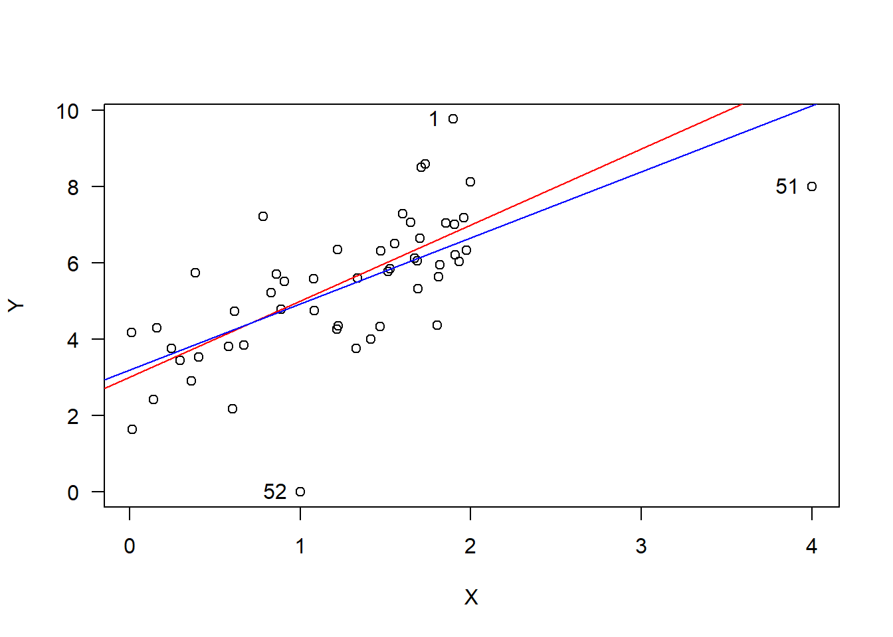
We can use the R function influence.measures() to compute a matrix containing the DFBETAS, DFFITS, covariance ratios, Cook’s D, and leverage for each data point. Applying the recommended thresholds in the previous sections results in the following extreme points, which are labelled in the above figure:
Note that point 1 is just part of the randomly generated data while points 51 and 52 were purposefully added to be anomalous. Hence, just because an observation is beyond one of these thresholds does not necessarily imply that it lies outside of the model.
2.6 Weighted Least Squares
A key assumption of the Gauss-Markov theorem is that \(\varepsilon_i = \sigma^2\) for all \(i=1,\ldots,n\). What happens when \(\varepsilon_i = \sigma_i^2\)–i.e. when the variance can differ for each observation? Normalizing the errors \(\varepsilon_i\) can be done by \[
\frac{\varepsilon_i}{\sigma_i}
= \frac{1}{\sigma_{i,i}}(Y_i - X_{i,\cdot}\beta)
\sim\mathcal{N}\left(0,1\right).
\] In Chapter 1, we computed the least squares estimator as the vector \(\hat{\beta}\) such that \[
\hat{\beta} = \underset{\tilde{\beta}\in\mathbb{R}^{p+1}}{\arg\min}
\sum_{i=1}^n (Y_i - X_{i,\cdot}\tilde{\beta})^2
\] Now, we will solve the slighly modified equation \[
\hat{\beta} = \underset{\tilde{\beta}\in\mathbb{R}^{p+1}}{\arg\min}
\sum_{i=1}^n \frac{(Y_i - X_{i,\cdot}\tilde{\beta})^2}{\sigma^2_i}.
\] In this setting, dividing by \(\sigma_i^2\) is the ``weight’’ that gives this method the name weighted least squares.
Proceeding as in chapter 1, we take a derivative with respect to the \(j\)th \(\tilde{\beta}_j\) to get \[\begin{align*}
\frac{\partial}{\partial \tilde{\beta}_j}
\sum_{i=1}^n \frac{(Y_i - X_{i,\cdot}\tilde{\beta})^2}{\sigma^2_i}
&=
2\sum_{i=1}^n \frac{(Y_i - X_{i,\cdot}\tilde{\beta})}{\sigma^2_i}X_{i,j}\\
&=
2\sum_{i=1}^n \frac{Y_iX_{i,j}}{\sigma^2_i} -
2\sum_{i=1}^n \frac{X_{i,\cdot}\tilde{\beta}X_{i,j}}{\sigma^2_i}\\
&=
2\sum_{i=1}^n {Y_i'X_{i,j}'} -
2\sum_{i=1}^n {X_{i,\cdot}'\tilde{\beta}X_{i,j}'}
\end{align*}\] where \(Y_i' = Y_i/\sigma_i\) and \(X_{i,j}' = X_{i,j}/\sigma_i\). Hence, the least squares estimator is as before \[\begin{align*}
\hat{\beta}
&= ({X'}^\mathrm{T}X')^{-1}{X'}^\mathrm{T}Y'\\
&= ({X}^\mathrm{T}WX)^{-1}{X}^\mathrm{T}WY
\end{align*}\] where \(W \in\mathbb{R}^{n\times n}\) is the diagonal matrix with entries \(W_{i,i} = \sigma_{i}^2\).
In practise, we do not know the values for \(\sigma_i^2\). Methods to find a good matrix of weights \(W\) exist such as Iteratively Reweighted Least Squares which is equivalent to finding the estimator \[
\hat{\beta} = \underset{\tilde{\beta}\in\mathbb{R}^{p+1}}{\arg\min}
\sum_{i=1}^n \lvert Y_i - X_{i,\cdot}\tilde{\beta}\rvert^q
\] for some \(q\in[1,\infty)\).